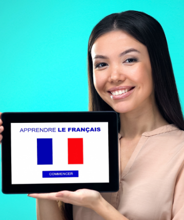

ACTVITES
HOLA! languages center
French is considered by many to be the language of love and romance. However, it is not only limited to love. The French language is so widespread that the number of French speakers around the world is estimated at 300 million, and thus it ranks ninth among the most spoken languages in the world, and first, along with English, in terms of pronunciation in the five continents.

As soon as you join the French language course, you will begin your educational journey through which I will review with you the foundations and principles of the French language. The method used aims to give the learner autonomy and autonomy - ie push the learner to form sentences and communicate. Therefore, I ask all of you to write the lessons and information on a notebook or brochure and review it periodically until you can complete the lessons, so learning any language needs repetition and practice. let's start!
Learn french Online
With: Mdm Cristèle
9,99$ per month
Do you want to improve your level of English? Would you like to be able to have simple conversations in English, like talking about yourself and your country? The course Learning English: Conversational Skills for Beginners (2) will help you acquire the English conversational skill so that you can use it fluently and with confidence in your practical and daily life.
Learn french Online
With: Mr ZOHIR
25$ per month
The French language course (3) focuses more on the quality of speech by visualizing different situations from daily life, such as travel, for example. The course shows how to plan a vacation in French or make an appointment for the weekend in Paris. It also shows how to use the imperative and future tense and give advice. And directions to places during the trip in French.
Learn french Online
With: Mdm jackelin
300$ per month

English is the most used and spoken language around the world. ... English is the language used in business, science, and technology. Learning English will increase your chances to get a job, participate in discussions, and improve your networking skills. English helps you increase your educational opportunities.
This course is intended to help you acquire basic conversational skills at the primary level, and one of the most important of these skills is to learn how to introduce yourself in English, including introducing your name, age, nationality, study or profession, etc. Particular attention will be given to useful phrases and terms that are useful in these situations, as well as to the correct pronunciation.
Learn English Online
With: Mc jemlahiti
9,99$ per month
Do you want to improve your level of English? Would you like to be able to have simple conversations in English, like talking about yourself and your country? The course Learning English: Conversational Skills for Beginners (2) will help you acquire the English conversational skill so that you can use it fluently and with confidence in your practical and daily life.
Learn English Online
With: Mc Mnanoc
25$ per month
The English Learning: Conversational Skills for Beginners course (3) deals with many interesting topics such as ambition, plans, the future and travel , through which you will learn how to create sentences about ambition in English and what you dream of achieving, whether on a personal or professional level, and you will learn how to construct sentences about the future in English while Concerning your plans and projects that may be as simple as your dinner tonight or more complex as your leaving for work.
Learn English Online
With: Mc pogba
300$ per month
By learning Spanish, you'll be better able to communicate with Spanish speakers. Latin American countries are our most important trading partners. ... Your language skills will enable you to interact with English Language Learners. You can travel to a Spanish-speaking country and really get to know the culture.
This course is intended to help you acquire basic conversational skills at the primary level, and one of the most important of these skills is to learn how to introduce yourself in English, including introducing your name, age, nationality, study or profession, etc. Particular attention will be given to useful phrases and terms that are useful in these situations, as well as to the correct pronunciation.
Learn English Online
With: Senora Karmen
9,99$ per month
Do you want to improve your level of English? Would you like to be able to have simple conversations in English, like talking about yourself and your country? The course Learning English: Conversational Skills for Beginners (2) will help you acquire the English conversational skill so that you can use it fluently and with confidence in your practical and daily life.
Learn English Online
With: Segnor Agustin
25$ per month
The English Learning: Conversational Skills for Beginners course (3) deals with many interesting topics such as ambition, plans, the future and travel , through which you will learn how to create sentences about ambition in English and what you dream of achieving, whether on a personal or professional level, and you will learn how to construct sentences about the future in English while Concerning your plans and projects that may be as simple as your dinner tonight or more complex as your leaving for work.
Learn English Online
With: Sergio Ramos
300$ per month